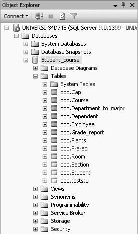
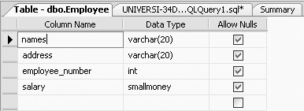

|
|
|
3.2. Creating a TableIn SQL Server , a relational database, data is loaded into tables that are created in a database. In Chapter 1, we showed you how to create a database. In this section we will concentrate on creating a table within an existing database. In SQL, the CREATE TABLE command is used to create a table. In SQL Server , the CREATE TABLE command has to be typed in the query editor screen. The general syntax of the CREATE TABLE statement is: CREATE TABLE Tablename (column_name type, column_name, type, .....) To demonstrate how this CREATE TABLE command works, we provide two examples. For the first example, we will create a table called Employee that has four columns (attributes). First, type the following in the query editor screen (make sure that you have selected the Student_course database before typing this; if you do not remember how to select the Student_Course database, refer to Figure 1-16 of Chapter 1):
CREATE TABLE Employee (names VARCHAR(20),
address VARCHAR(20),
employee_number INT,
salary SMALLMONEY)
Execute the query. You will get: Command(s) completed successfully. This CREATE TABLE query created a table called Employee with four columns (in the Student_course database): names, address, employee_number, and salary. The data type of names is VARCHAR (variable-length character), with a maximum length of 20 characters. The data type of address is VARCHAR, with a maximum length of 20 characters. The data type of employee_number is INT and the data type of salary is SMALLMONEY. To view the Employee table in the Student_course database, expand the Student_course node (under the Object Explorer) and the Tables node, and you should be able to see the Employee table, as shown in Figure 3-1.
Figure 3-1. Viewing the Employee tableTo look at the table definition of the table you just created, right-click on the table, Employee, and select Modify. Figure 3-2 shows the table definition of the Employee table.
Figure 3-2. Table Definition of Employee tableFor the second example to demonstrate the use of the CREATE TABLE command, we will create a table called Names (type the following query): CREATE TABLE Names (fullname VARCHAR(20)) This table has only one column, fullname. Its data type is VARCHAR and the maximum length of a name in this table is 20 characters. |
|
|
|